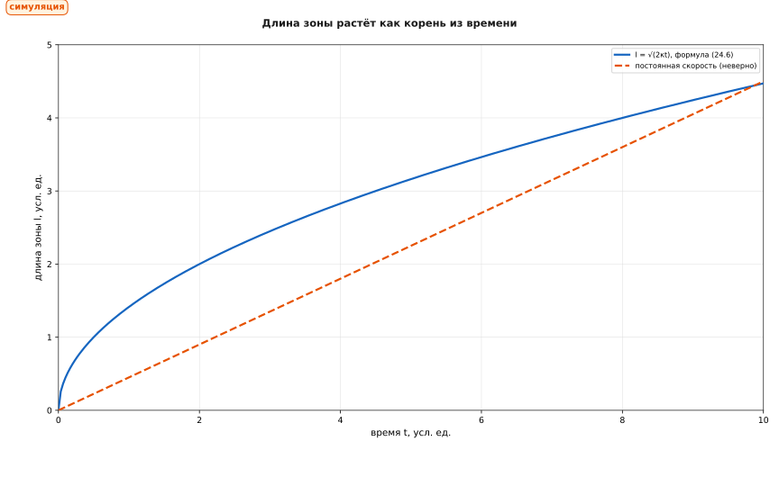

Стр. 496 · §1. Метод последовательной смены стационарных состояний
Приняв во внимание, что $p(x, t) = p_{\mathrm{r}}(t)$ при $x = 0$, из (24.1) найдем
Неустановившееся движение упругой жидкости в упругом пласте. Метод ПСССШаг 49 из 60
В книге: «Метод последовательной смены стационарных состояний» стр. 496
Опирается на: шаг 48 «Отбор равен убыли упругого запаса» (предпосылка), шаг 13 «Как работает уравнение пьезопроводности» (предпосылка), шаг 46 «Где проходит условный фронт давления» (пример)
При постоянном дебите галереи длина возмущённой зоны растёт как корень из времени: l(t) = √(2κt).
Это следует из баланса: квадрат длины растёт с постоянной скоростью 2κ.
Поэтому фронт со временем замедляется, а не идёт с постоянной скоростью.
Пороговая идея. Объяснить, откуда в балансе появляется квадрат длины. модель
Автор подставляет x = 0 в линейный профиль (24.1). Так он находит давление на галерее pг. Отсюда дебит Q пропорционален перепаду pк − pг и площади сечения Bh. Он обратно пропорционален длине пути фильтрации l(t). стр. 496
«Приняв во внимание, что $p(x, t) = p_{\mathrm{r}}(t)$ при $x = 0$, из (24.1) найдем»
«$$Q = \frac{k}{\mu} \frac{p_{\mathrm{k}} - p_{\mathrm{r}}}{l(t)} Bh,$$»
Из той же связи следует формула (24.5). Половина перепада (pк − pг)/2 равна Qμl(t)/(2kBh). Значит, при заданном дебите средняя депрессия пропорциональна текущей длине зоны. стр. 496
«$$\frac{Q \mu l(t)}{2kBh} = \frac{p_{\mathrm{k}} - p_{\mathrm{r}}}{2}. \quad (24.5.)$$»
Затем в баланс (24.2) подставляют (24.3)–(24.5). Под производной по времени оказывается произведение объёма Bh·l и средней депрессии. Обе величины пропорциональны l, поэтому их произведение пропорционально квадрату длины. стр. 496
«Подставив равенства (24.3)–(24.5) в соотношение (24.2), получим»
«$$Q = \beta^* \frac{d}{dt} \left( Bhl \frac{Q \mu l}{2kBh} \right),$$»
Дебит Q постоянен. Поэтому его выносят за знак производной, а затем сокращают. Под производной остаётся только квадрат длины l². стр. 496
«$$2Q = \frac{\beta^* \mu}{k} Q \frac{d}{dt} (l^2),$$»
Получается 2κ·dt = dl²: квадрат длины растёт с постоянной скоростью 2κ. Здесь пьезопроводность κ = k/(μβ*) — проницаемость, делённая на вязкость и упругоёмкость. Интегрирование даёт формулу (24.6): l(t) = √(2κt). стр. 496
«$$2\kappa dt = dl^2 \quad (\kappa = k/(\mu \beta^*)).$$»
«$$2\kappa dt = dl^2 \quad (\kappa = k/(\mu \beta^*)).$$»
«$$l(t) = \sqrt{2\kappa t}. \quad (24.6)$$»

Постоянна скорость роста квадрата длины, а не самой длины. Равные промежутки времени дают всё меньшие приращения l. Граница не идёт с постоянной скоростью. стр. 496
Вынести Q из производной можно только при постоянном отборе. При меняющемся дебите вывод надо делать заново. стр. 496
Как вывести закон движения фронта
Связь дебита и давления на галерее после подстановки x = 0. стр. 496
| Обозначение | Что это | Единицы |
|---|---|---|
| $Q$ | объёмный дебит жидкости | м³/с |
| $k$ | проницаемость пласта | м² |
| $\mu$ | динамическая вязкость жидкости | Па·с |
| $p_{\mathrm{k}}$ | начальное давление в пласте и давление на границе возмущения | Па |
| $p_{\mathrm{r}}$ | давление на галерее; обозначение как в исходной формуле | Па |
| $l$ | расстояние от галереи до границы возмущения | м |
| $t$ | время с начала отбора; dt — его малое приращение | с |
| $B$ | ширина пласта | м |
| $h$ | толщина пласта | м |
Половина перепада между галереей и контуром. стр. 496
| Обозначение | Что это | Единицы |
|---|---|---|
| $Q$ | объёмный дебит жидкости | м³/с |
| $\mu$ | динамическая вязкость жидкости | Па·с |
| $l$ | расстояние от галереи до границы возмущения | м |
| $t$ | время с начала отбора; dt — его малое приращение | с |
| $k$ | проницаемость пласта | м² |
| $B$ | ширина пласта | м |
| $h$ | толщина пласта | м |
| $p_{\mathrm{k}}$ | начальное давление в пласте и давление на границе возмущения | Па |
| $p_{\mathrm{r}}$ | давление на галерее; обозначение как в исходной формуле | Па |
Баланс после подстановки объёма и средней депрессии. стр. 496
| Обозначение | Что это | Единицы |
|---|---|---|
| $Q$ | объёмный дебит жидкости | м³/с |
| $\beta^*$ | коэффициент упругоёмкости пласта | Па⁻¹ |
| $t$ | время с начала отбора; dt — его малое приращение | с |
| $B$ | ширина пласта | м |
| $h$ | толщина пласта | м |
| $l$ | расстояние от галереи до границы возмущения | м |
| $\mu$ | динамическая вязкость жидкости | Па·с |
| $k$ | проницаемость пласта | м² |
Баланс после вынесения постоянного дебита из-под производной. стр. 496
| Обозначение | Что это | Единицы |
|---|---|---|
| $Q$ | объёмный дебит жидкости | м³/с |
| $\beta^*$ | коэффициент упругоёмкости пласта | Па⁻¹ |
| $\mu$ | динамическая вязкость жидкости | Па·с |
| $k$ | проницаемость пласта | м² |
| $t$ | время с начала отбора; dt — его малое приращение | с |
| $l$ | расстояние от галереи до границы возмущения | м |
Дифференциальный закон роста квадрата длины. стр. 496
| Обозначение | Что это | Единицы |
|---|---|---|
| $\kappa$ | коэффициент пьезопроводности | м²/с |
| $t$ | время с начала отбора; dt — его малое приращение | с |
| $l$ | расстояние от галереи до границы возмущения | м |
| $k$ | проницаемость пласта | м² |
| $\mu$ | динамическая вязкость жидкости | Па·с |
| $\beta^*$ | коэффициент упругоёмкости пласта | Па⁻¹ |
Закон движения границы при постоянном дебите галереи. стр. 496
| Обозначение | Что это | Единицы |
|---|---|---|
| $l$ | расстояние от галереи до границы возмущения | м |
| $t$ | время с начала отбора; dt — его малое приращение | с |
| $\kappa$ | коэффициент пьезопроводности | м²/с |
Ошибка: Граница идёт с постоянной скоростью.
На самом деле: Скорость увеличения квадрата длины постоянна; сама длина растёт как квадратный корень из времени. стр. 496
Для расчёта «Постоянный дебит: из баланса к закону движения фронта» отделите исходные параметры от модельных выходов.
Как смена переменной при вычислении: квадрат длины меняется проще, чем сама длина.
Где аналогия перестаёт работать: Смена переменной не превращает модельный фронт в измеряемую границу.
Отдельно проверьте единицы пьезопроводности и получаемого расстояния.
Линейный рост квадрата расстояния означает, что равные промежутки времени не дают одинаковых приращений самого расстояния.
Верный ответ: Квадрат длины зоны растёт с постоянной скоростью 2κ; Длина зоны растёт как корень из времени; κ = k/(μβ*)
Постоянна скорость роста l², поэтому l = √(2κt), и фронт замедляется. Где это в тексте (стр. 496) →
Расставьте шаги вывода закона движения фронта.
Перетащите пункты (мышью или пальцем за ⠿) или двигайте кнопками ↑ ↓.
Верный ответ: Подставьте x = 0 в профиль и выразите депрессию на галерее. → Запишите половину депрессии через длину зоны по (24.5). → Подставьте объём зоны и среднюю депрессию в баланс (24.2). → Вынесите постоянный дебит и получите 2κ·dt = dl². → Проинтегрируйте: l(t) = √(2κt).
Вывод идёт от профиля к балансу, затем к дифференциальному закону и интегралу. Где это в тексте (стр. 496) →
Верный ответ: Объём зоны и средняя депрессия оба пропорциональны l
Произведение двух величин, пропорциональных l, пропорционально l². Где это в тексте (стр. 496) →
Все утверждения шага с дословной цитатой автора и страницей книги (по PDF).
Галерейное давление получают подстановкой x = 0 в линейный профиль. вывод
«Приняв во внимание, что $p(x, t) = p_{\mathrm{r}}(t)$ при $x = 0$, из (24.1) найдем»
Дебит пропорционален перепаду давления и площади сечения, обратно пропорционален длине пути фильтрации. вывод
«$$Q = \frac{k}{\mu} \frac{p_{\mathrm{k}} - p_{\mathrm{r}}}{l(t)} Bh,$$»
При заданном дебите среднее падение давления пропорционально текущей длине зоны. вывод
«$$\frac{Q \mu l(t)}{2kBh} = \frac{p_{\mathrm{k}} - p_{\mathrm{r}}}{2}. \quad (24.5.)$$»
Для вывода закона фронта в баланс (24.2) подставляют (24.3)–(24.5). вывод
«Подставив равенства (24.3)–(24.5) в соотношение (24.2), получим»
Подстановка даёт производную по времени от произведения Bh l и средней депрессии. вывод
«$$Q = \beta^* \frac{d}{dt} \left( Bhl \frac{Q \mu l}{2kBh} \right),$$»
При постоянном Q множитель Q выходит за знак производной, в которой остаётся квадрат длины. вывод
«$$2Q = \frac{\beta^* \mu}{k} Q \frac{d}{dt} (l^2),$$»
Квадрат длины возмущённой зоны растёт с постоянной производной, равной удвоенной пьезопроводности. вывод
«$$2\kappa dt = dl^2 \quad (\kappa = k/(\mu \beta^*)).$$»
Пьезопроводность равна проницаемости, делённой на произведение вязкости и упругоёмкости. вывод
«$$2\kappa dt = dl^2 \quad (\kappa = k/(\mu \beta^*)).$$»
Интегрирование даёт длину зоны, равную квадратному корню из удвоенного произведения пьезопроводности и времени. вывод
«$$l(t) = \sqrt{2\kappa t}. \quad (24.6)$$»
Стр. 496 · §1. Метод последовательной смены стационарных состояний
Приняв во внимание, что $p(x, t) = p_{\mathrm{r}}(t)$ при $x = 0$, из (24.1) найдем
Стр. 496 · §1. Метод последовательной смены стационарных состояний
$$Q = \frac{k}{\mu} \frac{p_{\mathrm{k}} - p_{\mathrm{r}}}{l(t)} Bh,$$
Стр. 496 · §1. Метод последовательной смены стационарных состояний
откуда
Стр. 496 · §1. Метод последовательной смены стационарных состояний
$$\frac{Q \mu l(t)}{2kBh} = \frac{p_{\mathrm{k}} - p_{\mathrm{r}}}{2}. \quad (24.5.)$$
Стр. 496 · §1. Метод последовательной смены стационарных состояний
Подставив равенства (24.3)–(24.5) в соотношение (24.2), получим
Стр. 496 · §1. Метод последовательной смены стационарных состояний
$$Q = \beta^* \frac{d}{dt} \left( Bhl \frac{Q \mu l}{2kBh} \right),$$
Стр. 496 · §1. Метод последовательной смены стационарных состояний
или, так как $Q = \text{const}$,
Стр. 496 · §1. Метод последовательной смены стационарных состояний
$$2Q = \frac{\beta^* \mu}{k} Q \frac{d}{dt} (l^2),$$
Стр. 496 · §1. Метод последовательной смены стационарных состояний
откуда следует
Стр. 496 · §1. Метод последовательной смены стационарных состояний
$$2\kappa dt = dl^2 \quad (\kappa = k/(\mu \beta^*)).$$
Стр. 496 · §1. Метод последовательной смены стационарных состояний
Проинтегрируем полученное соотношение и найдем
Стр. 496 · §1. Метод последовательной смены стационарных состояний
$$l(t) = \sqrt{2\kappa t}. \quad (24.6)$$
На этот шаг опираются: шаг 50 «Давление у галереи и ошибка ПССС».
Фронт давления растёт как корень
Ссылки в ответе ведут к исходному тексту.